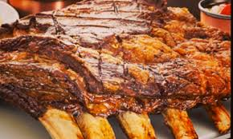

Churrasco de costela de gado é um dos mais favoritos entre os amantes do churrasco.
Ingredientes
1 peça de costela
Sal grosso
Modo de preparo
Polvilhe a carne com sal grosso.
Ajuste a grelha no ponto mais alto da churrasqueira.
Coloque a costea com a parte do osso voltada para baixo.
Churrasqueie em braseiro médio durante 3 horas no mínimo.
Quando as ripas começarem a ser soltar da carne, vire a costela com a parte da gordura para baixo e churrasqueie por mais 3 horas.
Churrasco
Churrasco é o nome dado ao prato feito a basee de carne en natura ou processada, assada sobre fogo ou brasas, com a utilização de estacas de madeira ou metal (chamados de espetos), ou de grelhas.
Churrasqueira
A churrasqueira ou grelhador ( ou ainda fogão a carvão) é o principal utensílio culináiro utilizado nos churrascos.